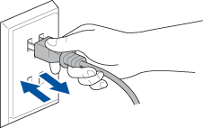

Impossibile stampare
Spegnere e riaccendere l'alimentazione
Spegnere e riaccendere l'alimentazione utilizzando il pulsante di accensione oppure scollegando e ricollegando il cavo di alimentazione.
Se è ancora presente il messaggio di errore, è necessario riparare l'apparecchio.
